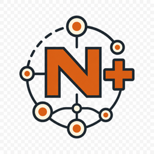
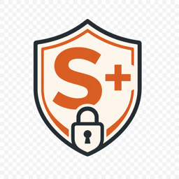
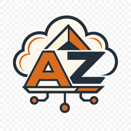
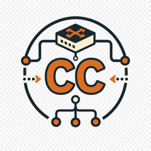
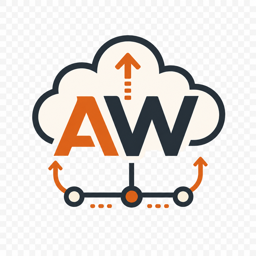

Why it holds up under a real exam.
Four things most prep tools skip. Each one is why a high score here means you're actually ready, not just good at one question bank.
I sat and passed every cert on this platform. The questions match what the real exam asks, not what a generic study app guesses you'll need.

Most tools ship one fixed bank of 500 questions. CertAnvil generates fresh ones every session, so your score reflects what you know, not what you memorised.

AI alone makes mistakes. Every question clears seven checks first, including a second AI pass and a factual-correctness gate. Wrong answers never ship.
Guessing how ready you feel never works. Your readiness score is one number, recalculated every quiz and weighted to the exam blueprint. When it says you'll pass, you will.
And the same engine sits behind every cert. Network+ is live today; Security+, Azure, CCNA and AWS are on the way.

Live
Soon
Soon
Soon
Soon